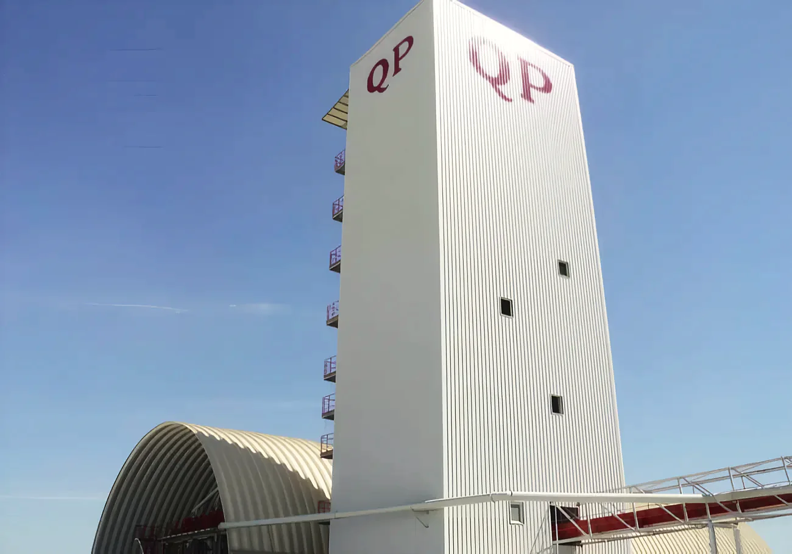

Silo delivery
20 m³ silos with pneumatic conveying of the dry mix up to the floors. A clean and healthy job site, with the material protected from weather, spillage and theft.
Home / Products
Every QP dry mix product with its code, what it's for, how it goes on, how it's packed and the approximate coverage per tonne, as in the factory brochure.


Cement based dry mix bond coat of OPC, quality enhancing additives and processed mineral aggregates. Applied on concrete to give a mechanical key for plastering.
| Code | Product and use | Coverage / tonne |
|---|---|---|
| QP1100 | Bond CoatRush coat for a good key on normal fair faced concrete.Tyrolean box / spray hopper, 2–5 mm | 430 m² @ 2 mm |
| QP1120 | Bond CoatRush coat for a good key on densified concrete.Tyrolean box / spray hopper, 2–5 mm | 430 m² @ 2 mm |
| QP1140 | Bond CoatRush coat for a good key on ultra smooth concrete.Tyrolean box / spray hopper, 2–5 mm | 430 m² @ 2 mm |
| QP1150 | Bond CoatRush coat on impermeable, non absorbing surfaces (EPS/XPS etc).Tyrolean box / spray hopper, 5–6 mm | 430 m² @ 2 mm |

Dry mix plaster and render of OPC, quality enhancing additives and processed mineral aggregates. Applied with machine on masonry and concrete.
| Code | Product and use | Coverage / tonne |
|---|---|---|
| QP1200 | Cement Render / PlasterRender or plaster on internal and external concrete block walls.Spray machine / manual, 10–20 mm | 42 m² @ 15 mm |
| QP1210 | Cement Render / Plaster, AAC/ConcreteRender or plaster on internal and external AAC and concrete block walls.Spray machine / manual, 10–20 mm | 42 m² @ 15 mm |
| QP1230 | Cement Render (PG)Render on external plinth areas.Spray machine / manual, 15–20 mm | 30 m² @ 20 mm |
| QP1240 | Cement Plaster (HSG)Plaster for high strength (> 15 MPa) requirements.Spray machine / manual, 15–50 mm | 37 m² @ 15 mm |
| QP1250 | Cement Plaster (FG)Fine thin coat on ceilings and rough cement plaster surfaces.Spray machine / manual, 4–6 mm | 162 m² @ 4 mm |

Pigmented dry mix render of white Portland cement, inorganic pigments, quality enhancing additives and processed marble aggregates. Applied with machine on masonry and concrete.
| Code | Product and use | Coverage / tonne |
|---|---|---|
| QP1300 | Decorative Colour RenderDecorative colour render on external block walls.Spray machine / manual, 15–20 mm | 42 m² @ 15 mm |
| QP1310 | Decorative Colour Render (TG)Decorative textured colour render on external block walls.Spray machine / manual, 15–20 mm | 35 m² @ 15 mm |
| QP1320 | Render for rock workHigh strength (> 15 MPa) decorative textured colour render for landscaping works.Spray machine / manual, 15–50 mm | 38 m² @ 15 mm |

Dry mix plaster of hemi-hydrated gypsum, quality enhancing additives and processed mineral aggregate. Applied with machine on masonry and concrete.
| Code | Product and use | Coverage / tonne |
|---|---|---|
| QP1400 | Gypsum Plaster (SG)Normal gypsum plaster on internal AAC and concrete block walls.Spray machine / manual, 10–20 mm | 58 m² @ 12 mm |
| QP1410 | Gypsum Plaster (FG)Fine thin coat on ceilings and rough cement plaster surfaces.Spray machine / manual, 4–6 mm | 208 m² @ 4 mm |
| QP1412 | Gypsum Plaster (DG)Fine thin coat directly on concrete surfaces.Spray machine / manual, 4–6 mm | 208 m² @ 4 mm |
Every QP product is dosed and mixed at the factory in Mesaieed. On site a PFT machine adds the water and sprays it on, the same mix from the first wall to the last.


Dry mix masonry mortar of OPC, quality enhancing additives and processed mineral aggregates.
| Code | Product and use | Coverage / tonne |
|---|---|---|
| QP1500 | Masonry mortar for concrete blocksBlock laying mortar for concrete block work.Screw machine / manual mixing | 36 m² @ 10 mm |
| QP1510 | Masonry mortar for AAC blocksBlock laying mortar for AAC block work.Screw machine / manual mixing | 82 m² @ 5 mm |

Tile fixing glue for ceramic, porcelain and glass tiles, inside and out.
| Code | Product and use | Coverage / tonne |
|---|---|---|
| QP1552 | Tile Adhesive (HG)Tile fixing glue for ceramic tiles on internal and external areas.Screw machine / manual mixing | Yield 685 L/ton |
| QP1554 | Tile Adhesive (FG)Tile fixing glue for ceramic, porcelain and glass tiles, internal and external.Screw machine / manual mixing | Yield 670 L/ton |
Dry mix screed for rough and uneven concrete floors. OPC, quality enhancing additives and mineral aggregates.
| Code | Product and use | Coverage / tonne |
|---|---|---|
| QP1600 | Floor Screed (10–40 MPa)Bonded, unbonded or floating levelling screed on floors.Screw machine / manual mixing | Yield 530 L/ton |
Dry mix mortar for concrete and masonry repairs. OPC, quality enhancing additives and mineral aggregates.
| Code | Product and use | Coverage / tonne |
|---|---|---|
| QP1700 | Repair Mortar (FG)Fine repair mortar on concrete surfaces.Screw machine / manual mixing | Yield 620 L/ton |
| QP1710 | Repair Mortar (CG)Thick repair mortar on concrete surfaces.Screw machine / manual mixing | Yield 530 L/ton |
Shrinkage compensated grout for fixing machine foundations and similar work. OPC, quality enhancing additives and mineral aggregates.
| Code | Product and use | Coverage / tonne |
|---|---|---|
| QP1800 | Non-shrink grout (MG)Grouting mortar for medium strength (40 MPa) anchoring.Screw machine / manual mixing | Yield 510 L/ton |
| QP1810 | Non-shrink grout (HG)Grouting mortar for high strength (70 MPa) anchoring.Screw machine / manual mixing | Yield 510 L/ton |
Fixing glue for EPS and XPS thermal insulation sheets.
| Code | Product and use | Coverage / tonne |
|---|---|---|
| QP1910 | Thermo adhesiveFixing glue for EPS/XPS thermal insulation sheets.Screw machine / manual mixing | 200 m² @ 3 mm |
The product is half the job. This is what comes with it.

20 m³ silos with pneumatic conveying of the dry mix up to the floors. A clean and healthy job site, with the material protected from weather, spillage and theft.
Machines that mix the dry mix with water accurately and evenly. A range of them to suit each application on site.
25–50 kg paper bags on wooden pallets with plastic shrink wrap.
We design, develop and manufacture custom products to a customer's specific requirements.
A fully equipped laboratory working round the clock, with quality control from raw material to finished product.
Our sales, QC and site engineers support you as and when required.
Need a product for a spec? Call with the code or the specification.
Or write to qp@qatarplaster.com · Mobile +974 5530 5140
Find the factory